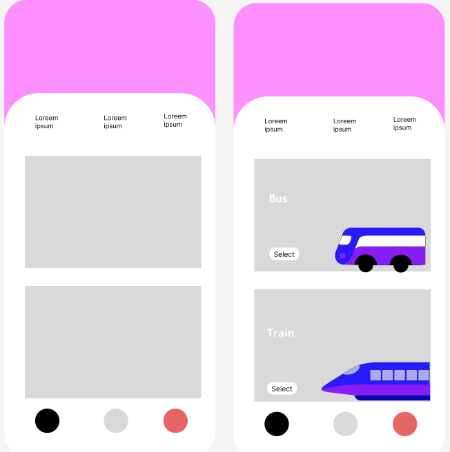
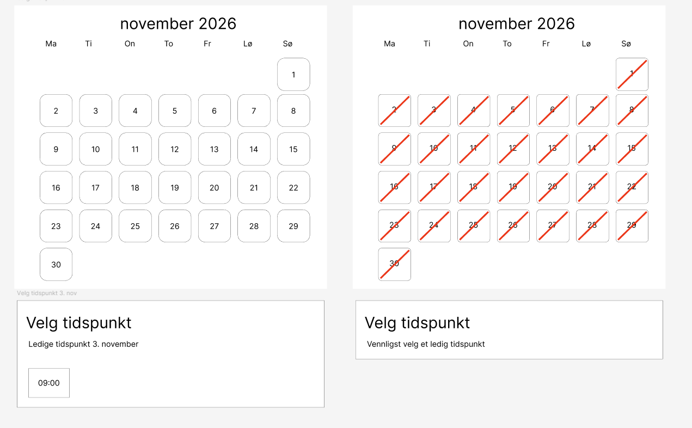
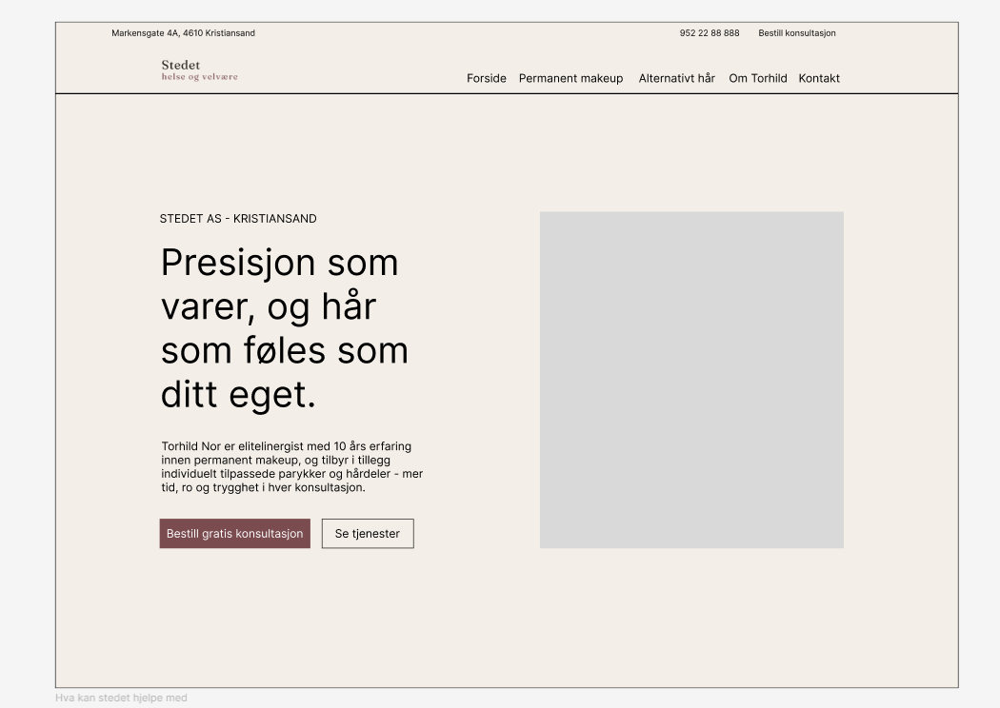

UX/UI · Mobilapp · Figma
Buss & tog
Et mobilkonsept som gjør valget mellom buss og tog visuelt enkelt, med store transportkort og en ryddig navigasjonsstruktur.
Åpne designet i Figma ↗
Om konseptet
En tydelig vei til riktig transportmiddel.
Prototypen utforsker et enkelt mobilgrensesnitt der buss og tog får hver sin tydelige flate. Illustrasjoner, korte etiketter og handlingsknapper gjør hovedvalgene lette å skanne på en liten skjerm.
Designet er holdt bevisst enkelt, slik at innholdshierarki, plassering av navigasjon og størrelsen på interaktive elementer står i sentrum før videre detaljering av tekst og funksjonalitet.
Jobbguru i Figma
Bookingplattformen som brukerreise.
Jeg har også utviklet konsept og designarbeid for Jobbguru i Figma, med fokus på bookingflyt, brukerreise og tydelig informasjonshierarki.
Åpne Jobbguru i Figma ↗
Stedet Velvære
En rolig og tydelig nettsideopplevelse.
Nettsidekonsept for Stedet Velvære AS, med en varm visuell profil, tydelig presentasjon av tilbudet og enkel vei til å bestille konsultasjon.
Besøk Stedet Velvære ↗